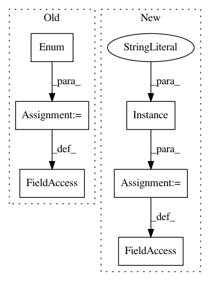

67638e4987cb87aac8d40c4535d5bb4007411a94,bokeh/models/renderers.py,GraphRenderer,GraphRenderer_2,#,218
Before Change
the attached edges.
)
inspection_mode = Enum("default", "linked", help=
With the "default" inspection mode, node glyphs will be inspected in the same
way as normal glyphs. With "linked" mode, inspecting a node will also inspect
the attached edges.
)
level = Override(default="glyph")
@abstract
After Change
rendered as the graph edges.
)
selection_policy = Instance(GraphHitTestPolicy, help=
With the "default" selection mode, node glyphs will be selected in the same
way as normal glyphs. With "linked" mode, selecting a node will also select
the attached edges.
)
inspection_policy = Instance(GraphHitTestPolicy, help=
With the "default" inspection mode, node glyphs will be inspected in the same
way as normal glyphs. With "linked" mode, inspecting a node will also inspect
In pattern: SUPERPATTERN
Frequency: 3
Non-data size: 6
Instances
Project Name: bokeh/bokeh
Commit Name: 67638e4987cb87aac8d40c4535d5bb4007411a94
Time: 2017-07-26
Author: lcanavan@continuum.io
File Name: bokeh/models/renderers.py
Class Name: GraphRenderer
Method Name: GraphRenderer_2
Project Name: bokeh/bokeh
Commit Name: 1a4ce5ce9d67a0a4ca8f9bc23f459ec493117ef1
Time: 2015-11-28
Author: bryanv@continuum.io
File Name: bokeh/models/renderers.py
Class Name: GlyphRenderer
Method Name: GlyphRenderer_2
Project Name: bokeh/bokeh
Commit Name: b8763c5ffd3cf8b90baab4214225329ea6263994
Time: 2016-04-27
Author: canavandl@gmail.com
File Name: bokeh/models/annotations.py
Class Name: Arrow
Method Name: Arrow_1